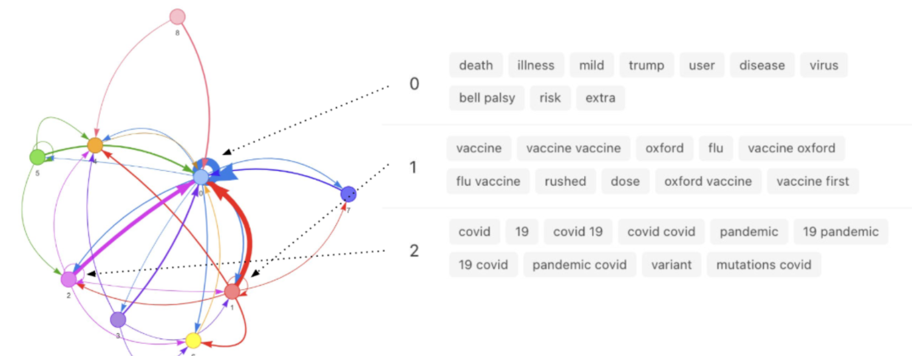

← Back to Research Portfolio
Modeling Human Beliefs with LLMs
Belief Modeling
NLP
Public Health

// Quick Summary
- People express causal claims when they believe one thing causes another thing
- People's causal language is a lens onto their beliefs about the world
- State-of-the-art software produces an interactive network visualization of interlocking beliefs using a Large Language Model fine-tuned to causal language
- Software operates over text data and can be applied to personal narratives (e.g., journal entries) or social media
- Produces interactive belief networks where nodes represent "causal topics" and edges represent directionality and magnitude of expressed causality
- Applied to public health domain and in experimental contexts
What the Software Does
The Causal Claims Pipeline is an AI tool that identifies, clusters, and visualizes
causal beliefs expressed in natural language. It works on narratives and text documents written by
individuals or extracted from platforms like Instagram, Reddit, or TikTok.
By detecting cause–effect statements and organizing them into an interactive belief
network, the software reveals how people reason about events in the world. Network
information can be downloaded and used in subsequent analyses of user social media engagement,
narrative interaction, and individual and group-level human behavior.
Why Use This Software
Beliefs about causal relationships are central to how people interpret events and make decisions.
Whether you're analyzing public reactions to vaccines or exploring consumer attitudes about a
product, understanding what people think causes what gives insight into mental
models and decision logic.
-
Business use case: A marketing team analyzes reviews and social media posts
to understand perceived causes of satisfaction or frustration.
"The update caused my phone to slow down" → flags risks associated with software changes.
-
Research use case: A cognitive scientist studying belief polarization tracks
how causal explanations (e.g., "economic downturn caused by immigration") vary
across populations and time.
How to Use the Software
- Prepare your dataset: Format text data as a .csv with one column containing the documents (tweets, articles, etc.).
- Upload to the web tool: Visit causal-claims.isi.edu and upload your dataset.
- Select your text column: Choose which column contains the content to be analyzed.
- (Optional) Enable clustering: Group cause/effect phrases by semantic similarity to reveal high-level topics.
- Submit and process: Jobs complete in about a minute for thousands of documents.
- Explore the belief network: View an interactive graph of causal relationships (nodes = concepts, edges = claims).
- Download results: Export the causal graph as an edge list .csv for further analysis.